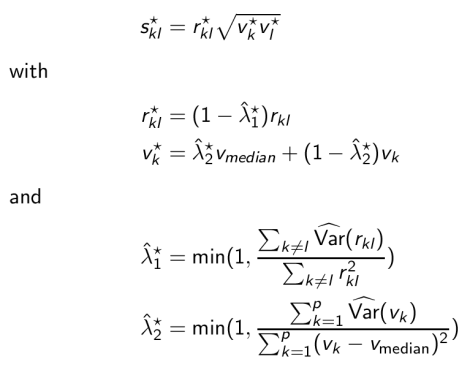

This package implements a James-Stein-type shrinkage estimator for the covariance matrix, with separate shrinkage for variances and correlations. The details of the method are explained in Schäfer and Strimmer (2005) and Opgen-Rhein and Strimmer (2007). The approach is both computationally as well as statistically very efficient, it is applicable to "small n, large p" data, and always returns a positive definite and well-conditioned covariance matrix. In addition to inferring the covariance matrix the package also provides shrinkage estimators for partial correlations and partial variances. The inverse of the covariance and correlation matrix can be efficiently computed, as well as any arbitrary power of the shrinkage correlation matrix. Furthermore, functions are available for fast singular value decomposition, for computing the pseudoinverse, and for checking the rank and positive definiteness of a matrix.
Current Version: 1.6.8
Authors: Juliane Schäfer, Rainer Opgen-Rhein, Verena Zuber, Miika Ahdesmäki, A. Pedro Duarte Silva, and Korbinian Strimmer.
Documentation and Installation:
Quick install: enter at the R console: install.packages("corpcor")- Manual (pdf file) and release history.
- Download of corpcor version 1.6.8 source package.
- Archive of previous versions of corpcor.
- Licensed under the GNU GPL version 3 (or any later version).
Additional Information and Relevant Papers:
- The two-way shrinkage formula for the covariance matrix estimator implemented
in "corpcor":
 - An illustrative test script and the two accompanying example data sets smalldata.txt and largedata.txt.
- Correlation Shrinkage: Schäfer, J., and K. Strimmer. 2005. A shrinkage approach to large-scale covariance matrix estimation and implications for functional genomics. Statist. Appl. Genet. Mol. Biol. 4: 32.
- Variance Shrinkage: Opgen-Rhein, R., and K. Strimmer. 2007. Accurate ranking of differentially expressed genes by a distribution-free shrinkage approach. Statist. Appl. Genet. Mol. Biol. 6: 9.